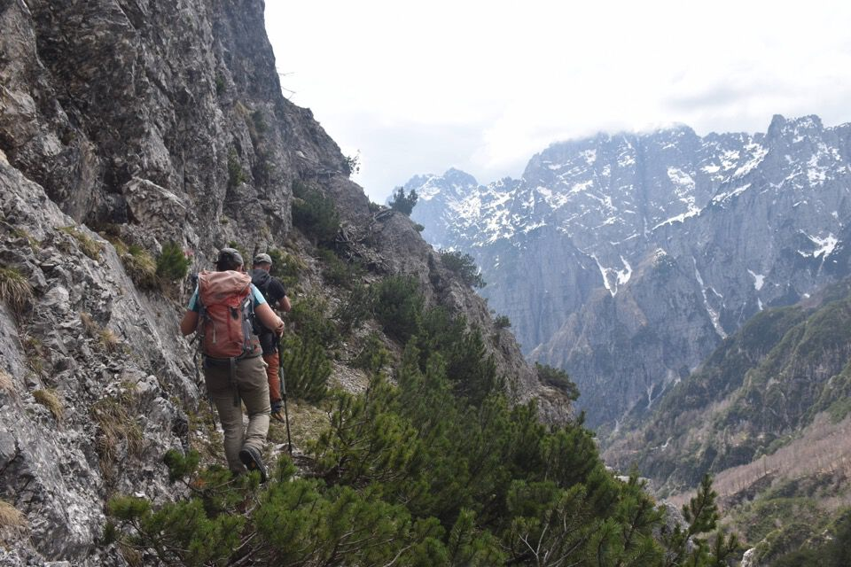
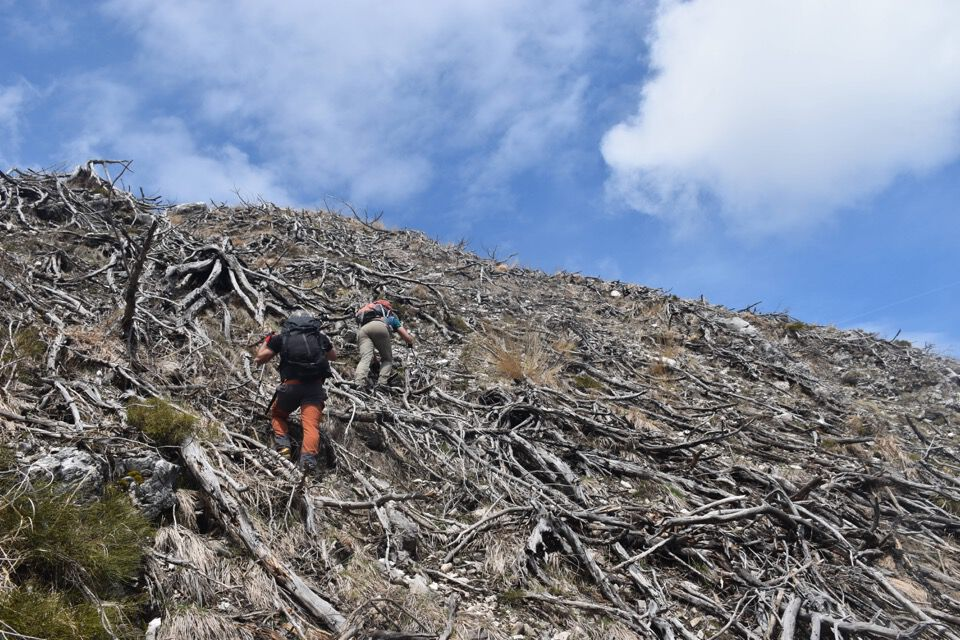
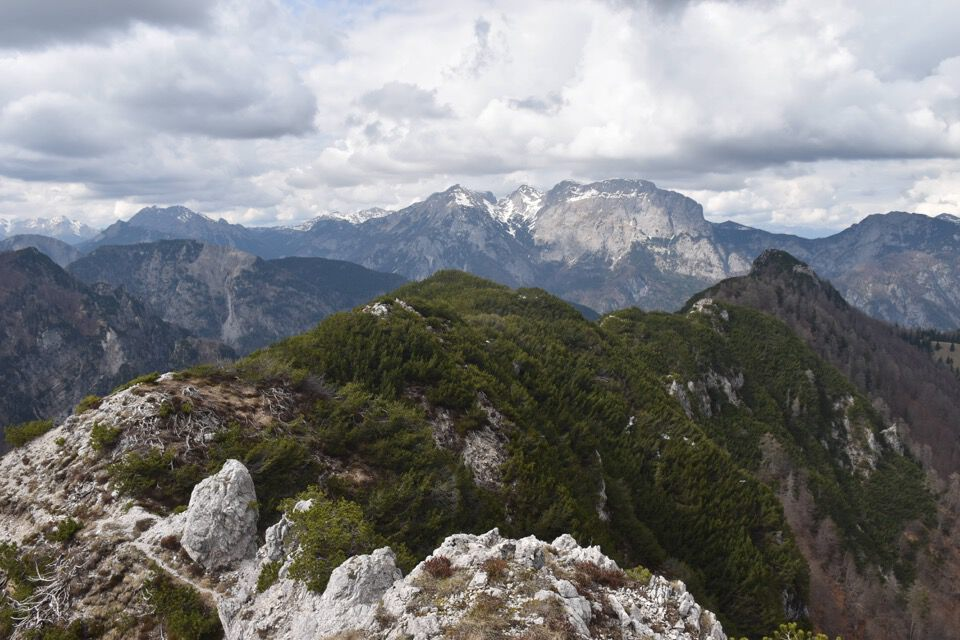
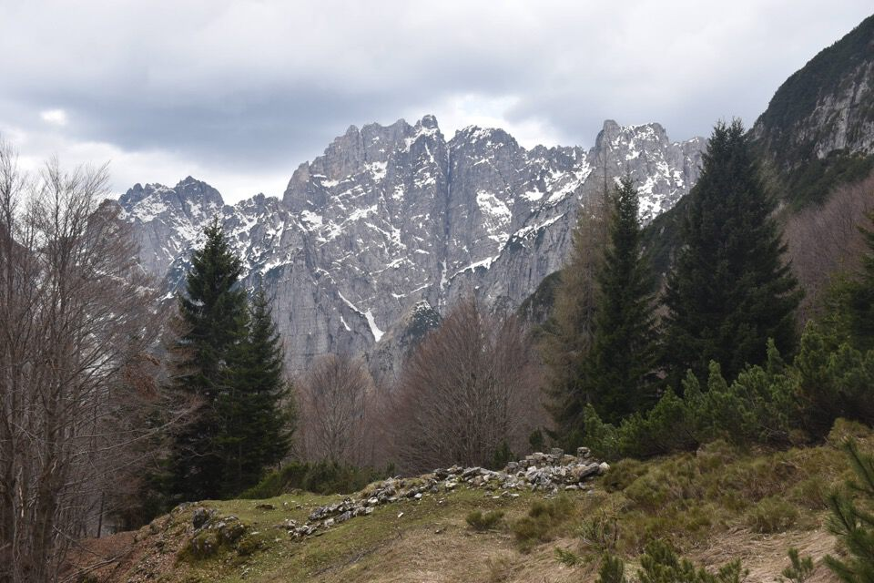

Come ha detto Kelen, trattasi di monte di tipo grebano-minerale, anche se un tempo era mugoso come il vicinissimo Falcons; a differenza di quest'ultimo, Le Piche ha una frequentazione quasi nulla, ma merita salirci perché il panorama è bellissimo. Inoltre si domina il Canal del Ferro, cosa che spiega il perché delle mulattiere di guerra (purtroppo ora devastate dall'incidendio del 2013 che ha sfigurato il monte).
Anello come proposto da Armellini in Trois Neris. Faccenda impegnativa: l'itinerario da Sud presenta dei passaggi molto esposti su terreno scabroso.
A sx la forcella Bassa di Ponte di Muro, a dx la forcella Alta; inspiegabile come nelle carte escursionistiche non figuri il sentiero per la forcella Bassa.

La salita è molto breve.
Si inizia la salita già con i brividi, per via di una cengetta stretta e molto esposta, con ghiaino; però subito dopo eccoci sulla panoramica cengia erbosa.
Che bello il pascolo di casera Ponte di Muro!
Fortuna che c'è il mugo...

Ecco il corpo principale del monte.
Ci tocca lottare coi mughi: eravamo avvisati.
In centro foto il bollo rosso citato dalla relazione: non sembra il massimo quel passaggio, ed effettivamente non lo è.
Dopo la facile cengia iniziale, un passaggio molto esposto su terreno infido: una volta può bastare.
Ambiente impressionante.

Abbiamo avuto una certa difficoltà a reperire la mulattiera di guerra nella parte bassa, talmente devastato è l'ambiente.
L'eccezionale e tormentata cresta Sud-Est de Le Piche.
La parte finale della mulattiera, lungo la cresta sommitale: impressionante.

La bella conca di casera Slenza.

Il Cozarèl con forcella des Sèminis a dx (!).
Contrasti da brivido: neppure Sbrici è così!
Davvero un bel panorama, e una grande soddisfazione.
Dai Falcons non vedi mica il Fella!
Iniziamo a scendere: terreno terrificante.
Ottimo sentiero di camosci, più tranquillo di quello che sembra.
Ecco il nostro monte illuminato dal sole.
Dai Falcons verso Nord.
Impressionante la parete Nord del Çuc dal Bôr!
Creta di Pricot Sud: visione folgorante! Poche settimane dopo ho salito quel versante fino in cima (vedi pagina su questo sito).
Da notare in centro foto ciò che m'incuriosì a dismisura: la «cengle dai cjavai» (o «Cengle sul davant da la Crete»)!
Si osserva e si progetta.
Il panorama che si gode dalla cresta del Falcons è di una bellezza straordinaria.
Casera Ponte di Muro: luogo da fiaba.
Alcune delle Crete di Gleris.